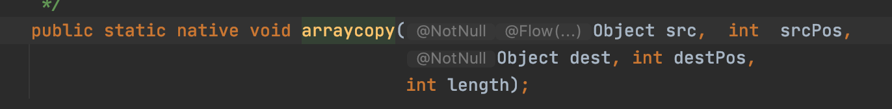
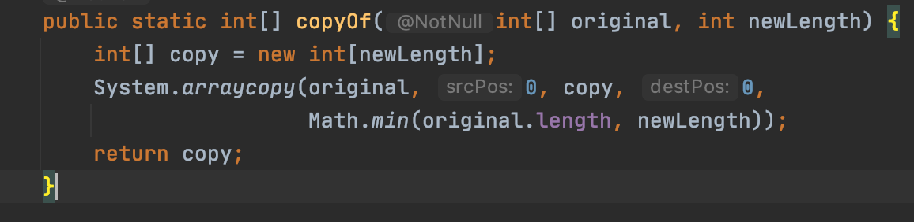

【JAVA】拷贝
拷贝
Java中针对变量之间的拷贝分为两种，一种是引用拷贝，一种是对象拷贝
引用拷贝
引用的拷贝是指变量之间直接拷贝对象的引用，也就是说两个变量之间共享某一个对象的内存地址，这个时候一个变量做更改值操作会影响另外一个变量。
1 | String str = new String("asd"); |
程序在编译过程中，会在栈区域创建一个引用str，以及一个引用str1，在程序运行时会在堆区域开辟一个空间存放asd对象，这时引用str里面存在的是对象asd的地址。随后程序将str里面存放的值拷贝到str1中，这个时候str1里面存放的就是asd对象的地址，两个引用现在指向同一个地址。

对象拷贝
对象拷贝是指一个变量通过创建一个新的对象，这个新的对象会拷贝被拷贝变量所引用对象的里面的属性值。在这个过程中，根据是否拷贝被拷贝变量引用对象里面引用的另外一个对象又可以划分为浅拷贝和深拷贝。
对象拷贝的例子：
1 | Student s1 = new Student("jack"); |

上图的例子中，s1修改属性值并不会影响s2的属性值，因为这时候两个引用里面存放的是独立对象的地址。
浅拷贝
上面说到浅拷贝深拷贝的情况是发生在对象里面引用另外一个对象的情况中，那么浅拷贝就是另外一个引用在拷贝的时候并不会重新创建另外一个对象，而是直接拷贝这个对象的引用。
1 | Teacher t = new teacher("sam"); |

如果t修改属性值为john，那么s1和s2会同时改变
深拷贝
深拷贝可以对比浅拷贝来看，会比浅拷贝拷贝的更深，也就是深拷贝在进行拷贝的时候会重新创建一个对象拷贝上面所说的另外一个引用的值。
1 | Teacher t = new teacher("sam"); |

深拷贝的实现方式有两种，一种是序列化拷贝，另外一种是重写clone()函数。
数组拷贝
数组拷贝有四种方式
引用拷贝
1 | int[] t = new int[10]; |
这个时候仅仅拷贝的是t这个对象的引用，也就是上面说的引用拷贝，两个数组之间是互相通的。
System.arraycopy()
1 | int[] t = new int[10]; |

这个函数的实现使用底层c++语言，一般在拷贝的时候直接使用这个是比较快的。因为在拷贝的过程中，需要首先给t1创建一个对象，所以在使用中两个相当于上面所说的对象拷贝
Array.copyof()
1 | int[] t = new int[10]; |

从上面的源码我们可以看到，这个函数在实现的过程中，首先创建了一个数组对象，随后调用了System.arraycopy()的函数实现，等价于上述先创建再拷贝
clone()
1 | int[] t = new int[10]; |
clone()函数在实现的过程中，需要先创建一个数组对象，然后对这个数组对象进行拷贝；